1. O Mostruário existe
| Verificação | Antes | Agora |
|---|---|---|
.palheta no DOM | 0 | 13 |
.trilho no DOM | 0 | 4 |
| Menu mobile | não existia | existe e passa nos testes |
| Título opaco em | 759 ms | 467 ms |
| Animações infinitas | 5 | 0 |
| CLS em 3 s | 0,0044 | 0,0074 |
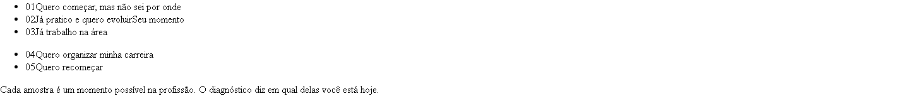
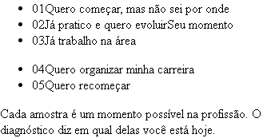
2. Landing completa nas quatro larguras
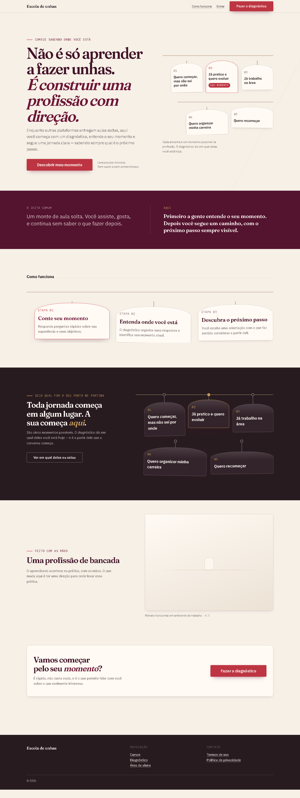
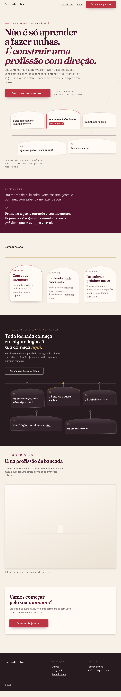
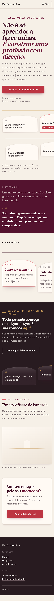
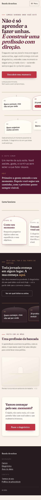
3. Acima da dobra
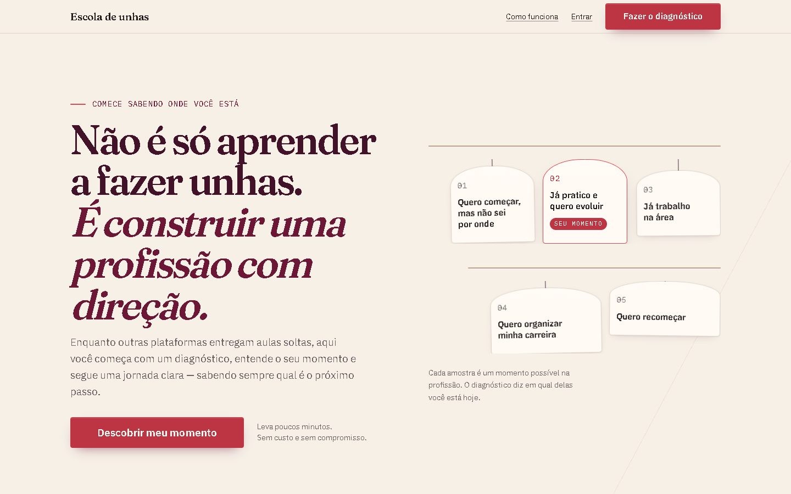
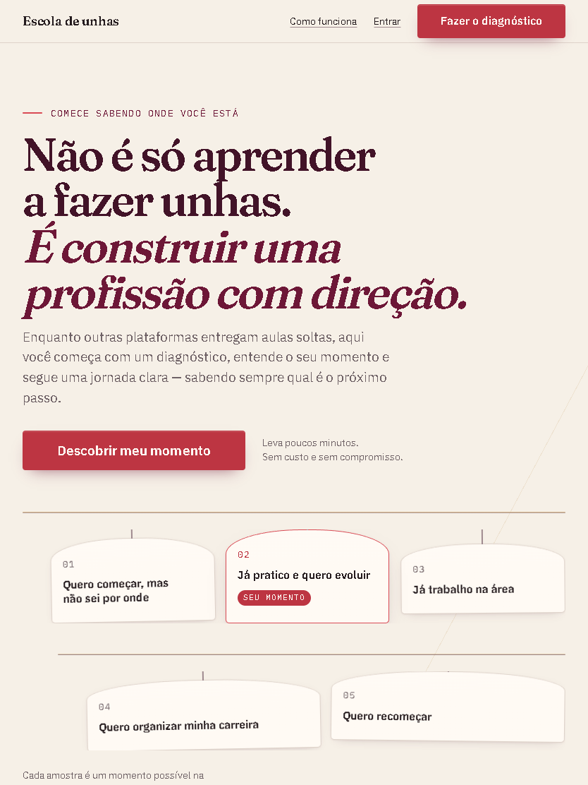
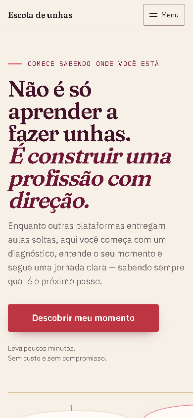
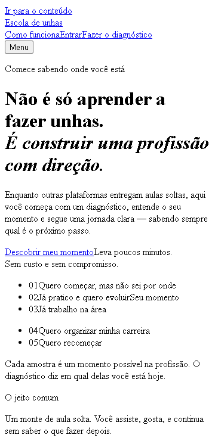
4. Seções
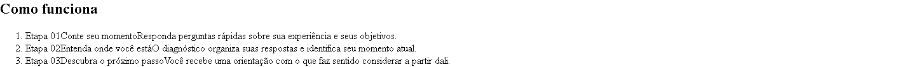
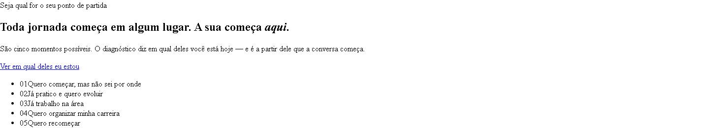
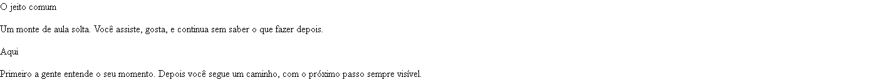
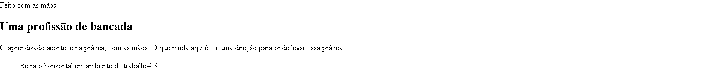
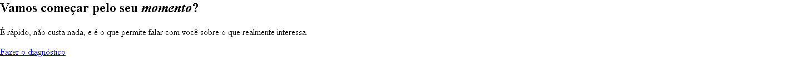
5. Menu mobile
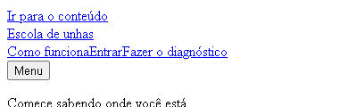
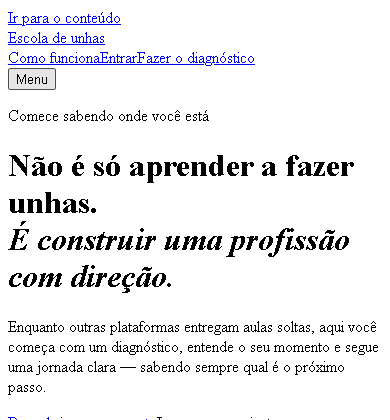
| Requisito | Resultado |
|---|---|
aria-expanded alterna | false → true |
| Escape fecha | sim |
| Foco volta ao botão | sim |
| Foco entra no painel ao abrir | sim |
| Rolagem de fundo travada | sim, e destravada ao fechar |
| Fecha ao escolher item | sim |
| Rolagem horizontal | nenhuma em 360 px |
| “Cursos” só com curso publicado | sim — hoje está oculto |
6. Estados
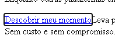
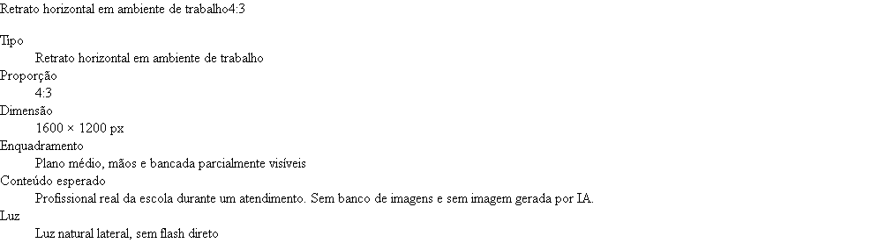
?revisao=1 — briefing de produção completo
prefers-reduced-motion: reduce — 300 ms após o load,
0 elementos abaixo de opacidade 1, incluindo trilhos e palhetas7. Movimento
Brilho de laca — posições sucessivas

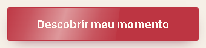
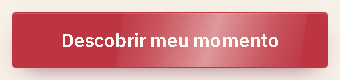
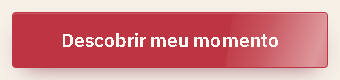

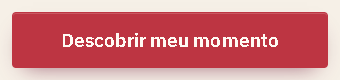
Uma passada na primeira carga, uma a cada hover, nada sob redução de movimento. Zero animações infinitas na página.
Por que o brilho não aparecia

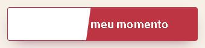
B e C idênticos: a profundidade nunca foi o problema. O degradê ia de transparente ao pico em 8% da largura — um fio, não um brilho.
8. Antes × depois
O projeto não é repositório git e a captura imediatamente anterior à primeira revisão foi
sobrescrita pelo próprio script. As comparações abaixo estão rotuladas pelo que realmente são.
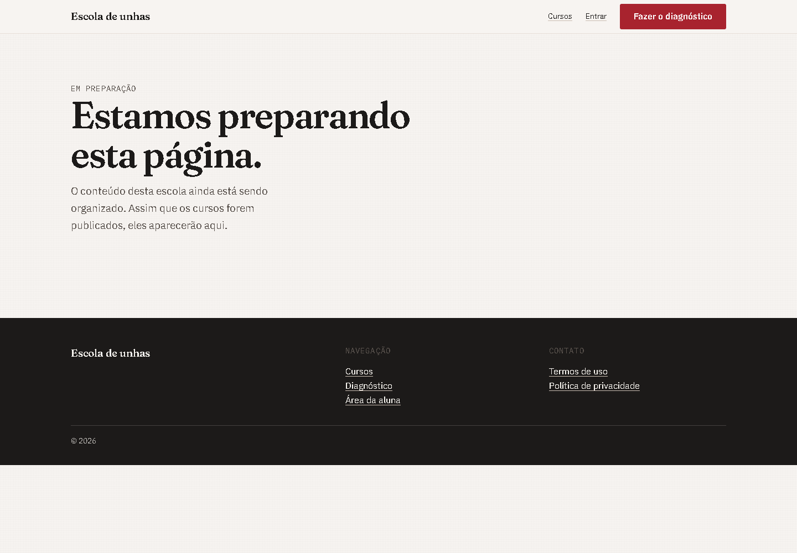

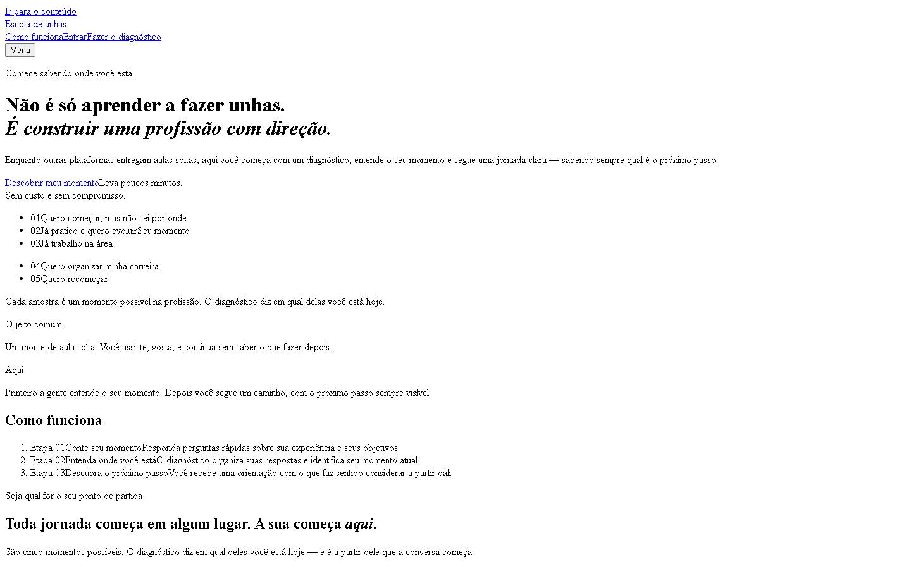
Gerado por
scripts/evidencia-landing.mjs,
scripts/evidencia-animacoes.mjs e scripts/evidencia-laca.mjs
contra o build de produção em localhost:5900.